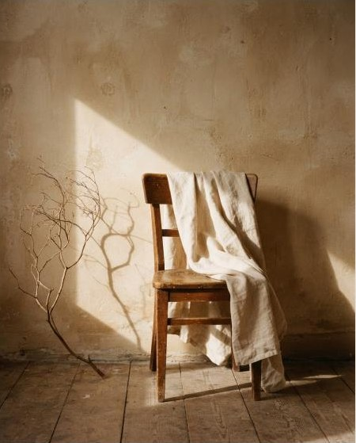

Ваше світло вже тут.
Залиште кілька слів про себе. Ми зв’яжемося протягом дня, щоб обрати дату й разом придумати вашу зйомку.
Натискаючи кнопку, ви погоджуєтеся з політикою конфіденційності.
Для вас завжди знайдеться світло.
Ваші заявки
Заявки зберігаються в браузері (localStorage) — так працює «база даних» без сервера.